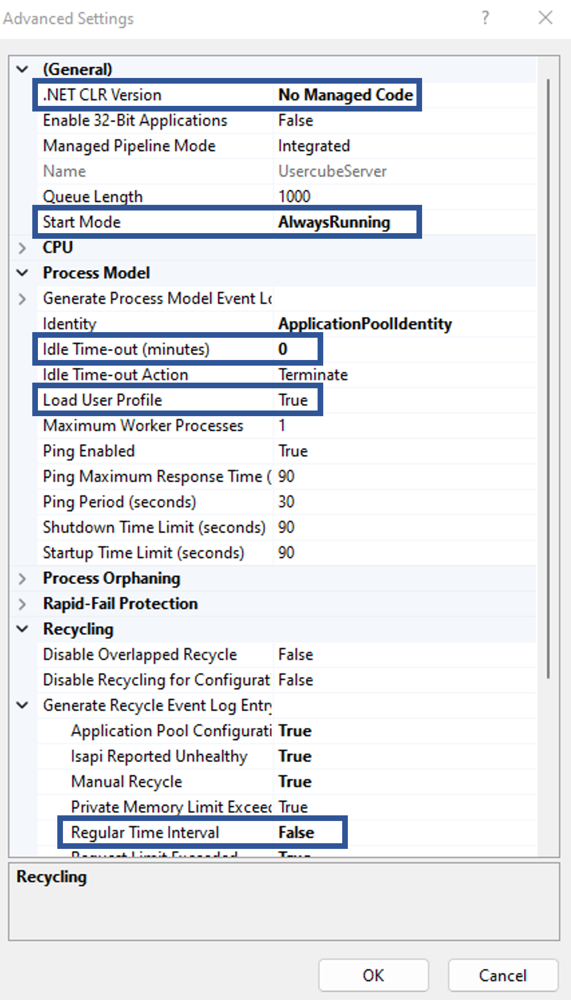
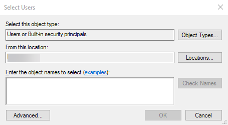

Install the Agents
Most on-premises installations use an agent integrated with Identity Manager's server. If this is your case, and the server is already installed, no need to go further. If, on the other hand, you need separate agents, or if you are installing Identity Manager's agents within Identity Manager's SaaS offering, this is the way to go.
NOTE: Please make sure that Identity Manager's agent requirements are met before going further. See the Agent topic for additional information.
Agent Working Directory
The agent runtime content should be extracted from the runtime archive following the instructions provided in the Create a Working Directory topic.
In the separate agent setup, the agent is usually installed on a different workstation from the server.
The agent is configured thanks to the appsettings.agent.json file. See the appsettings.agent topic for additional information.
Create an IIS Website
It is recommended to run the Identity Manager agent as an IIS website.
Remember, to install Identity Manager's agent as a Windows service, see the Agent topic for additional information.
Adding Identity Manager's agent as an IIS website can be achieved with the Internet Information Services (IIS) Manager which can be launched with the INETMGR.MSC command. You need to have an IIS 10.0 or greater.
The Microsoft Documentation provides the prerequisites and the procedure to create a new IIS site.
The information needed to go through the creation process are the following:
-
Identity Manager's agent uses an in-process hosting model
-
Identity Manager's agent uses .NET
-
Identity Manager agent's web.config dwells in the runtime directory
It might require a few modifications to target the agent instead of the server:
Step 1 – Open web.config with a text editor.
Step 2 – Change the arguments and stdoutLogFile attributes of the <aspNet> element as indicated below:
Code attributes enclosed with <> need to be replaced with a custom value before entering the script in the command line.
<aspNetCore processPath="<dotnet>" arguments="<./Usercube-Agent.dll>" stdoutLogEnabled="<false>" stdoutLogFile="<../Temp/stdout-agent.log>" hostingModel="<inprocess>">-
When creating the website, enter the following data:
Step 1 – Site name: Identity Manager Agent<Organization> is the recommended naming convention
Step 2 – Physical path: /<agent working directory>/Runtime
Step 3 – Type: http
Step 4 – IP address: All unassigned
Step 5 – Port & Hostname: To access Identity Manager's agent. Use the hostname and port that has been reserved for Identity Manager.
After creation, the following settings are recommended:
-
Application Pool > Identity Manager <Organization> > Advanced Settings > General > Start Mode set to AlwaysRunning;
-
Application Pool >
Identity Manager <Organization>> Advanced Settings > Process Model > Idle Time-out (minutes) set to 0 and Load User Profile set to True; -
Application Pool > Identity Manager <Organization> > Recycling > Regular time intervals set to 0.
Recycling the application pool creates a discontinuation in the connection between server and agent, which can disrupt some of Identity Manager's features such as the job scheduler. IIS already recycles the application pool at each setting change, thus Netwrix recommends not using periodic recycling.
The following is mandatory:
- Application Pool > Identity Manager <Organization> > Advanced Settings > General > .NET CLR Version > No Managed Code

This sums up IIS settings.
Hosting Bundle
You need to install the dotnet hosting bundle (version 8.0 or higher) to be able to run dotnet application.
Select an Agent Identity
The agent, through Identity Manager's server IIS Website, should be assigned a service account with the relevant permissions. See the Agent topic for additional information.
You can either:
-
Use the built-in application pool identity and grant this identity the right permissions. See the Install the Agents topic for additional information.
-
Use a custom Windows service account with the right permissions and use it as an IIS identity for Identity Manager's agent IIS Website
Check default behavior
Usually, creating an IIS application pool, such as the one within which Identity Manager's server website runs, triggers the creation of a service account IIS APPPOOL/<apppool_name> (where <apppool_name> is the application pool name) known as an application pool identity. It is associated with the IIS website. This account is granted basic group membership that should enable it to access what it needs.
For more information about IIS identities, visit the Microsoft Documentation.
Building on this default behavior, the default Application Pool Identity is usually granted the necessary permissions for Identity Manager's server to operate.
Before going further, you should check the following points:
Step 1 – Find the group membership of IIS APPPOOL\<apppool_name>.
Step 2 – Check the permissions on the working directory.
Right-click the working directory and select Security. The group section should contain one of the IIS APPPOOL/<apppool_name> groups, namely Users. And,
Step 3 – If the built-in application pool identity has been created but does not have the right permissions, you can follow the steps outlined in Install the Agents section to fix it. Go back to the section to make sure that the built-in application pool identity is effectively used by Identity Manager's server IIS Website.
Step 4 – If you would rather use a custom service account instead of the built-in application pool identity, start with Install the Agents.
Step 5 – If you're not sure what to do, follow the procedure below, starting with
Install the Agents.
Once the steps indicated above are completed you can carry on with setting an IIS Identity.
Set an IIS Identity
If you want to use the built-in application pool identity created with the application pool, you can use the Microsoft documentation.
If you would rather use a custom service account created for Identity Manager's agent, follow the procedure below.
The following implies that a custom service account has already been created for Identity Manager's agent. See theInstall the Server topic for additional information.
Follow the steps below to set an IIS identity and note that these are the same for the server:
Step 1 – Open the IIS Manager (INETMGR.MSC).
Step 2 – Open the Application Pools node underneath the machine node.
Step 3 – Select the Identity ManagerAgent/<Organization> application pool.
Step 4 – Right-click and select Advanced Settings.
Step 5 – In the Process Model section, on the Identity list item, click on the three dots to open the Application Pool Identity dialog.
Step 6 – Select the Custom Account radio button and click on Set.
Step 7 – Enter the Service Account credentials.
Step 8 – Click OK. You're all set.
Identity Manager's server IIS site will now use this identity to access the database and the working directory.
Set the Agent Permissions
Identity Manager's agent needs specific permissions on its working directory to run, write synchronization output and read provisioning orders. See the Server topic for additional information.
Up to four folders have to be considered:
- the working directory
- the runtime directory, usually
C:/Usercube<Organization>/Runtime - the data collection directory, usually
C:/Usercube<Organization>/Temp - the provisioning orders directory, usually
C:/Usercube<Organization>/Temp(same as for the data collection directory).
See the Create a Working Directory and Application Settings topics for additional information.
Further check the permissions of the service account and perform the steps for each of the relevant directories:
Step 1 – Go to the working directory parent folder.
Step 2 – Right-click the working directory.
Step 3 – Select Properties.
Step 4 – Select Security.
The agent service account selected in the previous step can either:
-
have the necessary permissions or it belongs to a group that does, so no further action is required
-
is missing one of the permissions
To fix the missing permissions follow the steps:
Step 1 – Click on Edit.
Step 2 – Click on Add.
Step 3 – In the Enter the object names to select textbox, enter the service account name in the down-level logon format. For example, if you chose the built-in application pool identity, this would be IIS APPPOOL/UsercubeAgent<Organization>.
Step 4 – Click on OK.
Step 5 – Select the newly added user name in the Group or user names panel at the top of the window.

Step 6 – Check the Allow column for the relevant permissions. Check the Deny column for the others. See theServer topic for additional information.
Step 7 – Click OK.
The working directory permissions are all set.
The same steps have to be performed on the runtime, the data collection and the provisioning orders directories. See the Create a Working Directory and Application Settings topics for additional information.
Name the Agent
Every agent is assigned a name. This name will be used in the UI to differentiate agents for the end-user, and in the XML configuration to assign connectors to specific agents.
In the appsettings.agent.json file, the OpenId > AgentIdentifier can be set to any string except for Local which is already taken by Identity Manager's inner workings. Then the agent set in the XML configuration must have the same string as identifier.
For example:
Code attributes enclosed with <> need to be replaced with a custom value before entering the script in the command line.
appsettings.agent.json
"<OpenId">: {
"AgentIdentifier": "<MyAgent>"
}With the following configuration:
<Agent Identifier="<MyAgent>" DisplayName_L1="<My Agent>"
URI="<https://contoso.com>" />Connect the Agent to the Managed Systems
The Runtime/appsettings.agent.json file is a technical configuration file that will enable you set up the connection between the agent and the target managed systems. See the appsettings.agent topic for additional information.
Every agent is associated with an appsettings.agent.json file.
The integration team should communicate the list of the managed systems to be connected to the agent, together with their configuration.
Here is an example of appsettings.agent.json connecting an agent to an Active Directory and an SAP server.
Code attributes enclosed with <> need to be replaced with a custom value before entering the script in the command line.
appsettings.agent.json
{
...
"Connections": {
"ADExport": {
"Servers": [
{
"Server": "<paris.contoso.com>",
"BaseDN": "<DC=paris,DC=com>"
}
],
"AuthType": "<Basic>",
"Login": "<Login>",
"Password": "<Password>",
"Filter": "<(objectclass=*)>",
"EnableSSL": "<true>"
}
"<SAPExportFulfillment>": {
"Server": "<serverUrl>",
"Login": "<login>",
"Password": "<password>"
}
}
}Remember, storing sensitive managed system data in configuration files, such as login/password pairs, is strongly discouraged. Sensitive data should be protected by one of the credentials protection methods. See theConnectors topic for additional information.
Encryption Key Pair
Identity Manager's agent needs an RSA key pair to perform various encryption operations, such as source, configuration, or log file encryptions.
An RSA key pair, as in an X.509 public key certificate and a private key, can be stored one of two ways:
-
As a PKCS #12 archive (also called Personal Information Exchange file or .pfx file) stored in the server's host file system. The file contains both the public key certificate and the private key.
-
As a certificate from a Windows' certificate store identified by SubjectDistinguishedName or by Thumbprint. The Windows certificate also contains both the public key certificate and the private key. This is the recommended method.
The key pair can be generated with tools such as OpenSSL or Microsoft's New-SelfSignedCertificate and pvk2pfx tool.
Here's an example showing how to generate a PKCS #12 archive (<UsercubeContoso.pfx>) bundling a public key certificate (<Identity Manager contoso.cert>) and a private key (<usercubecontoso.key>) with OpenSSL, with a 50-year expiration date:
Step 1 – Enter the following command:
openssl req -x509 -newkey rsa:1024 -keyout usercubecontoso.key -out usercubecontoso.cert -days 18250Step 2 – Enter the following command:
openssl req -x509 -newkey rsa:1024 -keyout usercubecontoso.key -out usercubecontoso.cert -days 18250Public key certificates can also be bought from trusted certificate providers and bundled with a private key into a PKCS #12 archive using step 2 in the frame above.
The certificate has to be linked to Identity Manager via EncryptionCertificate in the appsettings.agent.json file.
See the Application Settings topic for additional information about configuration parameters.
Certificate as a plain file
The following parameters are used to link the file to Identity Manager in EncryptionCertificate.
PKCS #12 archive can be password protected, hence the X509KeyFilePassword attribute.
Storing a .pfx file password in plain text in a production environment is strongly discouraged. It should always be encrypted using the Usercube-Protect-CertificatePassword tool. See the
Usercube-Protect-CertificatePassword
topic for additional information.
Code attributes enclosed with <> need to be replaced with a custom value before entering the script in the command line.
appsettings.agent.json
{
...
"<EncryptionCertificate>": {
"<File>": "<./UsercubeContoso.pfx>",
"<X509KeyFilePassword>": "<adefe$/izih>"
}
...
}Certificate in the certificate store
The certificate can be stored in the certificate store instead of the file system. This is the recommended method.
Code attributes enclosed with <> need to be replaced with a custom value before entering the script in the command line.
appsettings.agent.json
{
...
"<EncryptionCertificate>": {
"<DistinguishedName>":"<UsercubeContoso>",
"<StoreLocation>": "<LocalMachine>",
"<StoreName>": "<AuthRoot>"
}
...
}Connect the Agent to Server
The connection to Identity Manager's server can be configured through:
-
The applicationUri attribute in the Runtime/appsettings.agent.json file has to be set to Identity Manager's server URL
-
OpenIdClients and DefaultOpenIdClient must be used to set the agent's credentials to connect to the server; See the appsettings.agent and OpenIdClient topics for additional information.
Their content should be provided by the integration team, in relation to the OpenIdClient tag in the applicative configuration. See the OpenIdClient topic for additional information.
The following example shows an appsettings.agent.json file that sets an agent to connect to Identity Manager's server (<https://usercubeserver.contoso.com>) with the OpenId client identifier <Job> and the password <secret>, stored in the OpenIdClients list which also contains the "admin/secret" login/password pair.
Code attributes enclosed with <> need to be replaced with a custom value before entering the script in the command line.
{
....
"ApplicationUri": "<https://usercubeserver.contoso.com>",
"OpenIdClients": {
"Job": "<secret>",
"Admin": "<secret>"
},
"DefaultOpenIdClient": "<Job>"
}Remember, storing plain text passwords in configuration files is strongly discouraged. Sensitive passwords should be encrypted.
Install the Agent as a Windows Service
Installing Identity Manager's agent as a Windows service instead of an IIS website is mostly useful when using IIS is rendered moot by another system. For example, using a reverse proxy in front of Identity Manager's agent.
To install Identity Manager's agent as a service in Windows server, use the following command:
Code attributes enclosed with <> need to be replaced with a custom value before entering the script in the command line.
sc.exe create Usercube binpath= "<Usercube-Agent.exe --service>" displayname= "<Usercube Agent>" start= auto obj= "<DOMAIN\USER>" password= "<PASSWORD>"Remember, make sure to include a space between each parameter's equal sign (=) and the parameter value.
Configure the Starting Mode in IIS (optional)
This step is important if the scheduler is enabled. IIS starts Identity Manager's agent only if an incoming http request is made on the server and the scheduler is not launched until Identity Manager's agent is started. Because of that, you need to carefully set up the starting mode of IIS to force the starting of Identity Manager's agent.
Identity Manager's agent warm up is done using the <applicationInitialization> element in the web.config file, the configuration is described here.
You need to:
Step 1 – Enable the Application Initialization feature
Step 2 – Modify the applicationHost.config file to set the startMode of the application pool as AlwaysRunning. You also need to set the preloadEnabled of your application set to true. It is advised to backup the applicationHost.config file when doing this step to prevent mistakes.
Step 3 – Double check that the following section is set in your web.config file, in the section system.webServer:
Code attributes enclosed with <> need to be replaced with a custom value before entering the script in the command line.
<applicationInitialization doAppInitAfterRestart="<true>">
<add initializationPage="</>">
</applicationInitialization>
Once done, you need to check that the configured jobs are launched via the Identity Manager's scheduler without having to manually issue a request on Identity Manager's agent.
If this is not correctly configured, any restart of your IIS or application pool could prevent jobs from being launched.
What's Next?
The last step in the installation process is setting up an Email server. See the Send Notifications topic for additional information.